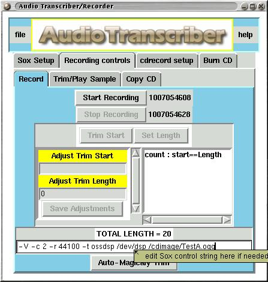
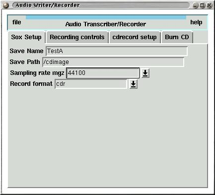

Audio Transcriber/Recorder is a perl/Tk program designed to transfer audio
tapes and lp's to cd's. The target platform is gnu/linux with X windows
and has not been tested on other systems.
Requirements:
- 1.5gig harddisk space. A typical cd takes 650 meg of data. If you record
a 60 minute cassette tape, or radio broadcast, or whatever to your
harddrive and then want to split it into individual tracks, you will
need alot of hd space.
- A directory named /cdimage. Well this is not really a must but it's
the default, so please make this directory some place in your directory
tree that has 1.5gig of space. I prefer a dedicated partition.
- Perl - with the Tk800.xxx and Tk-Month packages. You'll probably need to go to www.cpan.org
to get and install the Tk8 and Tk-Month packages or use MCPAN.
- SOX - sound tools. Comes with most popular linux distros. Please use
the SOX-12.17.1-t.tar that is distributed with this software because
the trim functions in earlier versions of sox do not work correctly.
SOX can be obtained at http://www.sourceforge.net
. I have not tested other versions of SOX except the version supplied with
this software.
- CDrecord. Comes with most linux distros. CDrecord can be obtained at
http://www.freshmeat.net
- CDDA2WAV. Comes with most linux distros as a part of the cdrecord package.
Cdrecord can be obtained at http://www.freshmeat.net
- GNU/Linux. Of course! Is there any other usable OS? Also Xwindows
and the window manager of your choice.
Sox, Cdrecord, cdda2wav must be in your path (i.e. in an
xterm you can type
sox or
cdrecord or
cdda2wav
to invoke the respective program). You must have the propper permissions
set to use the various programs and files used by Audio Transcriber.
Theory of operation:
The purpose of Audio Transcriber/Recorder is to record large audio
streams to a hard disk and then to split that file into smaller samples
suitable for burning to cdr media and to burn a cdr, cdrw.
An audio source connected to your sound card(/dev/dsp)
supplies an audio stream that is recorded to your harddrive. This
audio source could be a radio, tape player, microphone or whatever.
This large sample can then be broken down into smaller samples in a
suitable format to be burned onto recordable cd media. I want a minimum
of effort on my part to do all of this. The basic functionality is:
- Record an audio stream to a harddisk.
- Split a large audio file on the harddisk into small audio files.
- Record audio file(s) onto cdr or cdrw disk
- Maximum configurability if wanted, but defaults are correct 99.99 percent
of the time.
Audio Transcriber/Recorder is basically a frontend to
SOX, CDRECORD, CDDA2WAV. It implements only a subset of these packages
functionality in it's interface. You may use more of the functionality
of these packages from within this program by editing their "control
strings".
The gui uses a tabbed/notebook style to keep the interface
as clean as possible. Bubble help pops up to clarify the interface
where needed when the mouse hoovers over a control. In the screenshot
below bubblehelp is popped up over the control string field.

General Operation guidelines:
|
- The program is best started from a terminal window ( /path-to/recorder.pl)
so that the output from the various programs it calls can be viewed. In
other words the programs output messages are sent to stdout. This is helpful
because you can see whats going on behind the gui interface. The messages
in the term window are your only clue if there is an error in one of the
progams, Sox, CDrecord, CDDA2WAV, that it starts(i.e. sox error /dev/dsp
busy) - watch the term window!
- A little practice with the trim buttons will be very helpfull.
You can make your trims as you record the original sample, then go to the
Trim/Play Sample tab and fine tune the trims if needed(that's what I do).
- Turn off sound events in your window manager if you get alot
of /dev/dsp busy errors. I have this problem on my RH7.1 gnome/enlightenment
system.
- Uh - How do I get the sound into my sound card from my tape deck,
radio, whatever? You can buy a cable that plugs in to the audio-out on
your sound device(radio, tapedeck) and plugs into your soundcards audio-in
plug, I bought one at radio shack for about $5.00. The audio-out on my
radio/tapedeck is the headphones plug. Don't forget to bring up your
audio mixer and enable the audio-in (or line-in). If you can play a sound
through your computer speakers you can record it - plain and simple.
|
Sox setup tab:
|

The Sox Setup tab contains fields for entering program wide
defaults for sound recording. In this tab you set the Save Name, Save
Path, sampling rate and Record format. The fields in this tab are filled
in with default values when the program is started. Also these values are
used to construct the recording control string and may be edited in the
tabs where control string is shown.
|